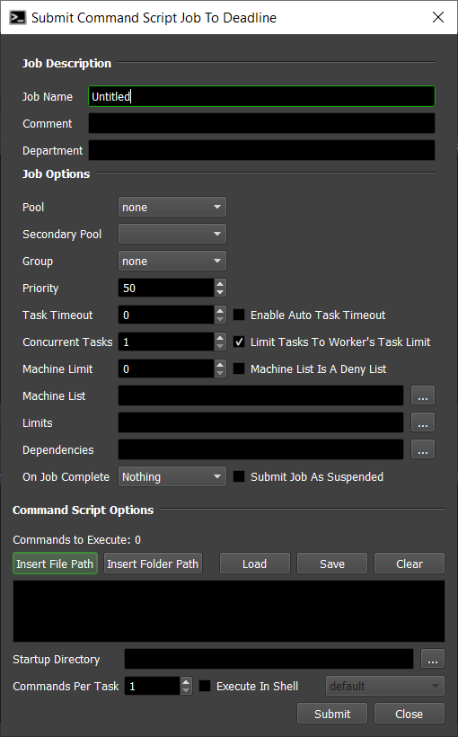
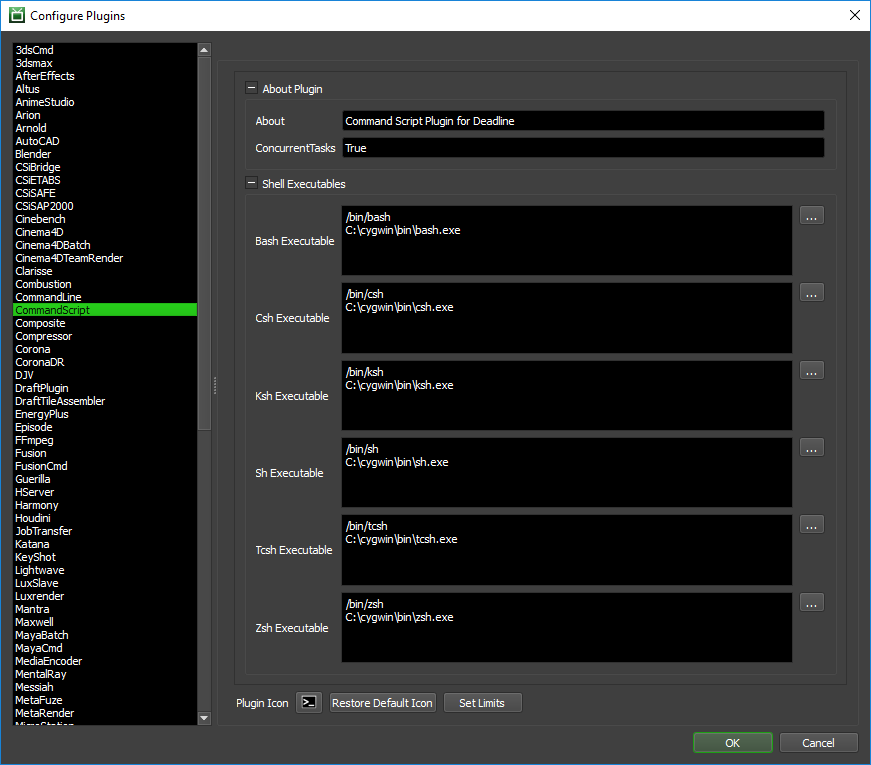

Command Script¶
Note
This plugin is deemed a potential security risk because it allows users to submit arbitrary Command scripts to Deadline, which are then executed on the render nodes. Customers are encouraged to read the AWS Thinkbox Deadline Shared Responsibility Model before using this plugin in their environment.
Job Submission¶
You can submit Command Script jobs from the Monitor. Command Script can execute a series of command lines, which can be configured to do anything from rendering to folder synchronization.
Submission Options¶
The general Deadline options are explained in the Job Submission documentation. The Command Script specific options are:
Commands To Execute: Specify a list of commands to execute by either typing them in, or by loading them from a file. You also have the option to save the current list of commands to a file. To insert file or folder paths into the Commands field, use the Insert File Path or Insert Folder Path buttons.
Startup Directory: The directory where each command will startup. This is optional, and if left blank, the executable’s directory will be used as the startup directory.
Commands Per Task: Number of commands that will be executed for each task.
Execute In Shell: If enabled, the specified command(s) will be executed through the shell.
Shell to Use: Which shell to use if you are executing in a shell.
Manual Submission¶
Command Script jobs can also be manually submitted from the command line.
Submission File Setup¶
Three files are required for submission:
the Job Info File
the Plugin Info File
the Command file
The Job Info file contains the general job options, which are explained in the Job Submission documentation.
The Plugin info file contains one line (this is the directory where each command will startup):
StartupDirectory=...
The Command file contains the list of commands to run. There should be one command per line, and no lines should be left blank. If you’re executable path has a space in it, make sure to put quotes around the path. The idea is that one frame in the job represents one command in the Command file. For example, let’s say that your Command file contains the following:
"C:\Program Files\Executable1.exe"
"C:\Program Files\Executable1.exe" -param1
"C:\Program Files\Executable1.exe"
"C:\Program Files\Executable1.exe" -param1 -param2
"C:\Program Files\Executable1.exe"
Because there are five commands, the Frames specified in the Job Info File should be set to 0-4. If the Chunksize is set to 1, then a separate task will be created for each command. When a Worker dequeues a task, it will run the command that is on the corresponding line number in the Command file. Note that the frame range specified must start at 0.
If you wish to run the commands in the order that they appear in the Command file, you can do so by setting the MachineLimit in the Job Info File to 1. Only one machine will render the job at a given time, thus dequeuing each task in order. However, if a task throws an error, the Worker will move on to dequeue next task.
To submit the job, run the following command (where DEADLINE_BIN is the path to the Deadline bin directory):
DEADLINE_BIN\deadlinecommand JobInfoFile PluginInfoFile CommandFile
Plugin Configuration¶
You can configure the CommandScript plugin settings from the Monitor. While in power user mode, select Tools -> Configure Plugins and select the CommandScript plugin from the list on the left. To get a description of each setting, simply hover the mouse cursor over a setting and a tool tip will be displayed.
Shell Executables
Only applicable when using the Execute In Shell job submission option.
Bash Executable: The path to the Bash executable. Enter alternative paths on separate lines.
Csh Executable: The path to the Csh executable. Enter alternative paths on separate lines.
Ksh Executable: The path to the Ksh executable. Enter alternative paths on separate lines.
Sh Executable: The path to the Sh executable. Enter alternative paths on separate lines.
Tcsh Executable: The path to the Tcsh executable. Enter alternative paths on separate lines.
Zsh Executable: The path to the Zsh executable. Enter alternative paths on separate lines.
Cmd Executable: The path to the Windows CMD executable. Enter alternative paths on separate lines. Although not technically a true SHELL in Windows. This executable is available for those users wishing to execute a managed process via Windows
cmd.exe.
FAQ¶
Can I use executables with spaces in the path?
Yes, just add quotes around the executable path.
Can I use my preferred SHELL on Linux / macOS?
Yes, either declare the absolute path to the shell in the command list such as:
/bin/sh argsor ensure the environment variable $SHELL is set correctly at execution time.
How can I report % progress of the task?
The CommandScript plugin ships with a basic StdOut handler to report progress based on StdOut from the executable/command(s) you are using. You can customize this StdOut handler in the CommandScript.py plugin file to your needs or create additional ones. The default regular expression based handler expects to see StdOut with the syntax:
Progress: 10% Progress: 22% Progress: 33% ...Basic usage from your shell script would be:
progress = 20 echo "Progress: $progress%"
Is a file extension required for the executable in Windows OS based Command Script jobs?
Yes. Ensure you enter a full, valid file path to the executable you wish to use. For example;
c:\python310\pythonwill fail, butc:\python310\python.exewill work on Windows OS.

{kind=link}
{kind=link}